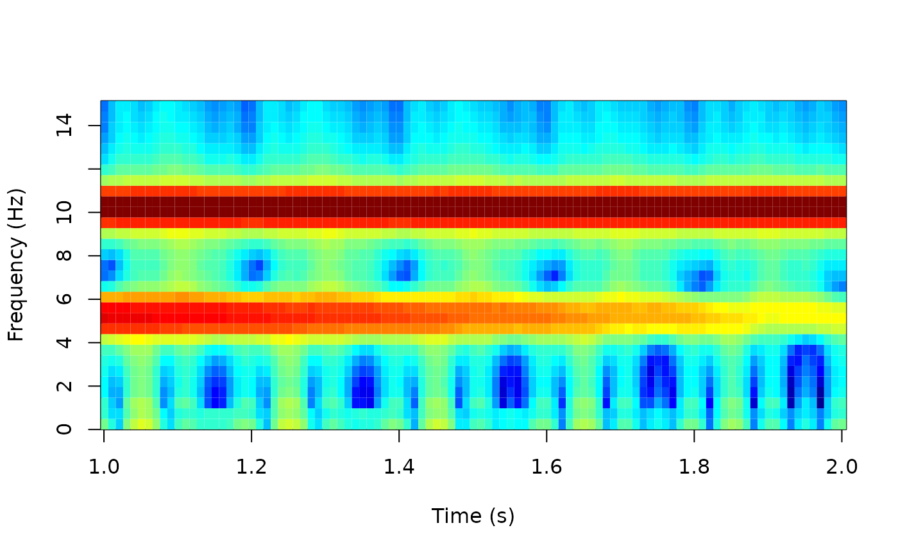

Compute 'multitaper' spectral densities of time-series data
Usage
multitaper_config(
data_length,
fs,
frequency_range = NULL,
time_bandwidth = 5,
num_tapers = NULL,
window_params = c(5, 1),
nfft = NA,
detrend_opt = "linear"
)
multitaper(
data,
fs,
frequency_range = NULL,
time_bandwidth = 5,
num_tapers = NULL,
window_params = c(5, 1),
nfft = NA,
detrend_opt = "linear"
)Arguments
- data_length
length of data
- fs
sampling frequency in 'Hz'
- frequency_range
frequency range to look at; length of two
- time_bandwidth
a number indicating time-half bandwidth product; i.e. the window duration times the half bandwidth of main lobe; default is
5- num_tapers
number of 'DPSS' tapers to use; default is
NULLand will be automatically computed fromfloor(2*time_bandwidth - 1)- window_params
vector of two numbers; the first number is the window size in seconds; the second number if the step size; default is
c(5, 1)- nfft
'NFFT' size, positive; see 'Details'
- detrend_opt
how you want to remove the trend from data window; options are
'linear'(default),'constant', and'off'- data
numerical vector, signal traces
Value
multitaper_config returns a list of configuration parameters
for the filters; multitaper also returns the time, frequency and
corresponding spectral power.
Details
The original source code comes from 'Prerau' Lab (see 'Github'
repository 'multitaper_toolbox' under user 'preraulab').
The results tend to agree with their 'Python' implementation with precision
on the order of at 1E-7 with standard deviation at most 1E-5.
The original copy was licensed under a Creative Commons Attribution
'NC'-'SA' 4.0 International License
(https://creativecommons.org/licenses/by-nc-sa/4.0/).
This package ('ravetools') redistributes the multitaper
function under minor modifications on nfft. In the original copy
there is no parameter to control the exact numbers of nfft, and
the nfft is always the power of 2. While choosing
nfft to be the power of 2 is always recommended, the modified code
allows other choices.
Examples
# \donttest{
# Takes long to run
time <- seq(0, 3, by = 0.001)
x <- sin(time * 20*pi) + exp(-time^2) * cos(time * 10*pi)
res <- multitaper(
x, 1000, frequency_range = c(0,15),
time_bandwidth=1.5,
window_params=c(2,0.01)
)
image(
x = res$time,
y = res$frequency,
z = 10 * log10(res$spec),
xlab = "Time (s)",
ylab = 'Frequency (Hz)',
col = matlab_palette()
)

# }